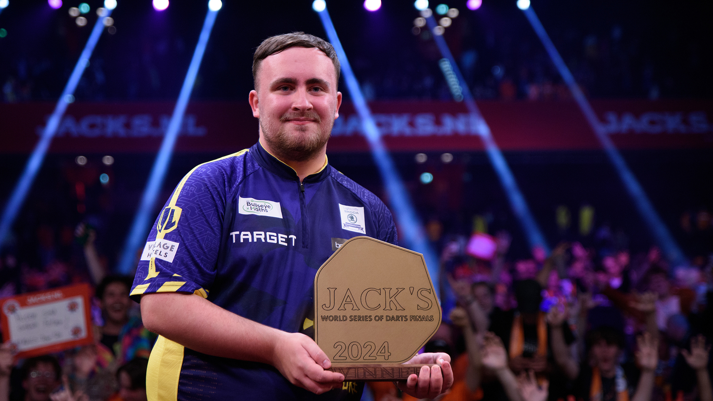

A világ különböző pontjain (pl. Ausztrália, USA, Ázsia) megrendezett globális bemutató tornák sorozatát lezáró, meghívásos döntő.
Az év hetedik nagy tornája.
A szeptemeri, amszterdami tornán elszenvedett kudarc egyben azt is jelentette, hogy véget ért Littler történelmi menetelése, amellyel megpróbálta az év összes összes kiemelt PDC-major tornáját megnyerni.
Szeptember közepe
Amszterdam - AFAS Live (Hollandia)